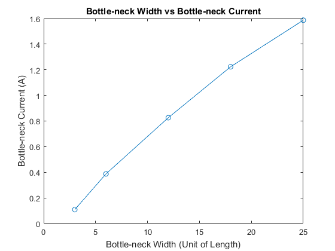

Contents
%%%Assignment 2: Part 2 'Comparisons' %Laplace equations will be solved in this part using finite difference.
Part 2:
%First section of this part will solve for the voltage across a frame where %one boundary is set to a fixed 1 volt and the opposing edge of the frame %is set to a fixed 0 volts. However we have heterogenious material where %the conductivity changes. Two boxes will be in the frame with a %conductivity less than the conductivity outside of the box. This script %will call the getVmap function which will return the corresponding %current. clc %Dimensions Length=30; ny=Length; nx=ny*2/3; %Each comparison limits %Case 0 with graph == 0 (Vary L (mesh) grid) %Case 1 with graph == 1 (Vary Bottleneck Width) %Case 2 with graph == 2 (Vary Sigma of Box) %Choose Case (PDF Example Case=1 used) graph=1; if(graph==0) %Fixed Parameters widthbottle=6; sigmabox=1e-2; %Varying Parameter Lens=[30,60,90,270,300]; %Current Jsum=zeros(1,5) for i = 1: 1 : 5 Jsum(i)=getVmap(Lens(i),Lens(i)*0.2,sigmabox); end figure(1) plot(Lens,Jsum,'-o') title('Bottle-neck Current vs Meshgrid') xlabel('Meshgrid (Grid Units)') ylabel('Bottle-neck Current (A)') elseif(graph==1) %Fixed Parameters Length=30; Sigmabox=1e-2; %Varying Parameters widths=[ 3 , 6, 12, 18, 25]; %Current Jsum=zeros(1,5) for i = 1: 1 : 5 Jsum(i)=getVmap(Length,widths(i),Sigmabox); end figure(1) plot(widths,Jsum,'-o') title('Bottle-neck Width vs Bottle-neck Current') xlabel('Bottle-neck Width (Unit of Length)') ylabel('Bottle-neck Current (A)') elseif (graph==2) %Fixed Parameters Length=30; widthbox=6; %Varying Parameter sigmavars=[1e-2 5e-2 1e-1 2e-1 6e-1 8e-1 9e-1 1]; %Currents Jsum=zeros(1,8) for i = 1: 1 : 8 Jsum(i)=getVmap(Length,widthbox,sigmavars(i)); end figure(1) plot(sigmavars,Jsum,'-o') title('Conductivity in Box vs Bottle-neck Current') xlabel('Conductivity of Boxes (mhos)') ylabel('Bottle-neck Current') end
Jsum =
0 0 0 0 0
 Summary
As the meshgrid increases the resolutiion of the model increases and the smoothness of the voltage map figure improves. The current decreased to a plateau value. This is expected since the simulation is converging to a more accurate representation of the problem, and thus the actual current will become more evident with an increased meshsize.
%As the bottleneck width is increased, the current flowing through the %bottleneck increases. If the bottleneck width increases to the same size as %the length of the frame, the behaviour of the voltage map is similar to %the one produced in part 1 question 'a' (Linear voltage plane from 0 to 1). % %As the conductivity of the boxes increases, the bottle-neck current %increases. When the conductivity inside the box is equal to the %conductivity outside the box, the voltage map is identical to the one %produced in part 1 questions 1. This is expected since this simply %represents a material of uniform conducitivity.